智能手环 Hacking 之旅
进入现在这个公司第一天上班的那天，有一大堆东西让我痴狂不已。在这堆东西中其中就包含一个可以自己定制的健康监测手环。从技术角度上来看，能随时随地监测健康状态真是太酷了。
- 很小的尺寸（大约 15mm x 40mm）
- 低功耗蓝牙（BLE）
- OLED 显示屏（96 x 32 像素）
- 可充电电池
- 支持USB 充电
- 加速度传感器
- 振动马达
- 价格在10 美元左右
在手环外面，除了背部印有“ FCC ID: 2AHFTID115 ”，就没了其他标识。搜索了一下，发现这个设备的名字是 ID115，另外还有些内部构造的图片。仔细观察可以看到那块最大的芯片上写着 “ N51822 ” ，这表明微控制器单元 (MCU) 很可能是 Nordic 的 nRF51822，一块支持低功耗蓝牙的 32 位 ARM Mo CPU。从理论上来讲，这可以编程实现手环现有功能以外的其他事情。
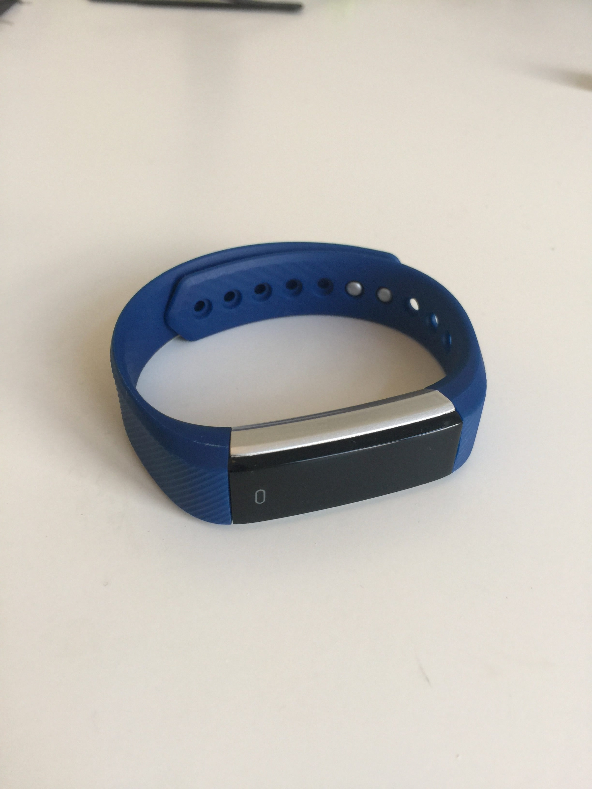

手环拆开前后
在拆卸它之前，我上谷歌搜索到了使用相同芯片类似的手环，不少人成功的拆开了手环。
拆开它其实并不容易，黑色的塑料盖子粘在了灰色的塑料后盖上。我用电吹风加热让胶水软化，然后用小刀小心翼翼的切开胶水，确保手环不会受到太大的伤害。拆开之后，我确认它确实使用的是 nRF51822。后来，我买了一个看似相似的手环，但是这个手环使用的是德州仪器的 MCU ,这个差异需要的特别注意。
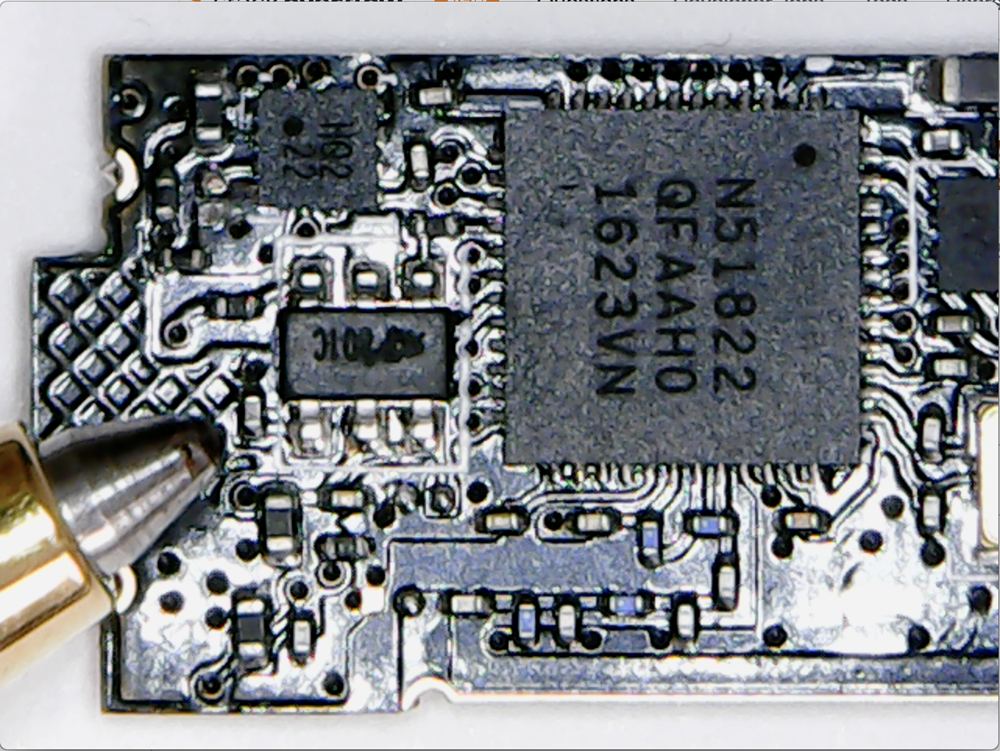
nRF51822与圆珠笔大小对比
想办法和它说话
从手册上了得知，芯片上的串口调试 Serial Wire Debug(SWD) 的两个引脚可用于编程/调试。这意味着两件事，如果我们想和对话：
- 我们需要一个 “SWD programmer” (例如 segger的 J-Link 仿真器)
- 我们需要访问 SDW 的两个引脚，即 SDWIO(数据) 和 SWDCLK(时钟)
幸运的是，板子上有不少裸露的垫片。他们的存在意味着需要进一步的调试/测试/验证。我想一定是有一个很酷的工程师预留着这些垫片，对于像我这样的人来说这简直就是给我们准备的礼物。不是所有的垫片都有标注，我根据我的猜测做了标注。
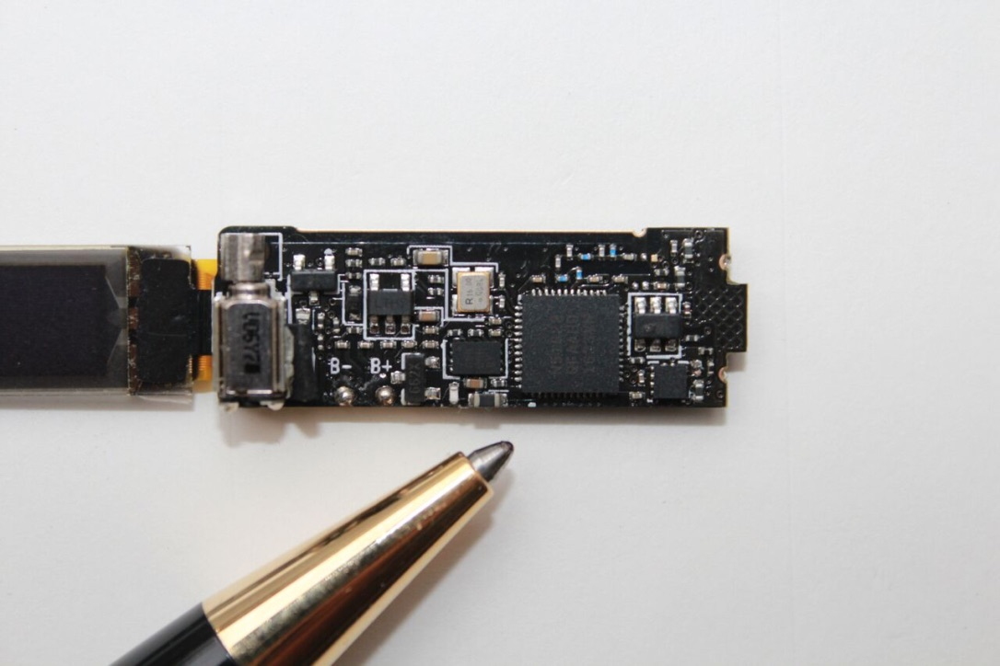

PCB 板子的正反面
使用一个廉价的 USB 显微镜,我拍了一些板子正反的照片，试着追踪从 MCU 到垫片的痕迹。
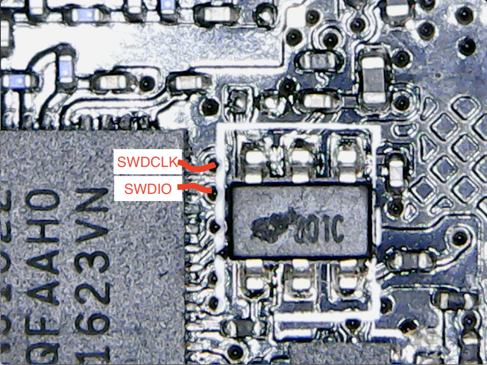

在板子的正反面追踪 SWDIO 和 SWDCLK
注意这是一个多层的 PCB, 在它的上面有通孔。所以我们需要追踪板子的正反两面。使用这些图片，我们可以追踪到SWDIO 和 SWDCLK 从芯片连接到了 IO 和 CLK 垫片。这也证实了板子上标注的 “CLK”的引脚 实际上是 SWDCLK。在它的右边的引脚是 SWDIO。我们可以得到第一个映射表。
| nRF51822 引脚 | 板子 | 描述 |
|---|---|---|
| SWDIO | IO | 数据引脚 |
| SWDCLK | CLK | 时钟引脚 |
Open-chip 手术
为了能够访问 SWD 的两个引脚，我在板子上给各个接触垫焊接了很细的线。
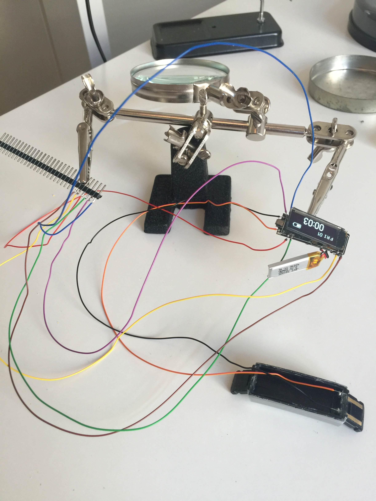
闪烁
下一个目标是尝试编程实现一些其他事情。为了运行最简单的程序，我们需要确保：
- 我们正确地跟踪了SWDIO/SWDCLK引脚
- SWD 编程器正常运行,能和计算机交互
- 使用 Nordic’s sdk 交叉编译Arm 程序
- 能够把编译好的程序放到芯片中
- 芯片正确的驱动和引导我们的程序
本案例中 “hello,world” 程序是实现 LDE 发光二极管不间断的闪烁。即使这样其实也不简单，首先板子上没有 LED 发光二极管。如果我们自己额外添加一个，那就必须搞清楚该接在什么地方。这增加了问题的另外一个自由度。天下没有免费的午餐，我只在 P1 和 P2 上连接了两个 LED,希望我们能够在 MCU 上找到对应的引脚。
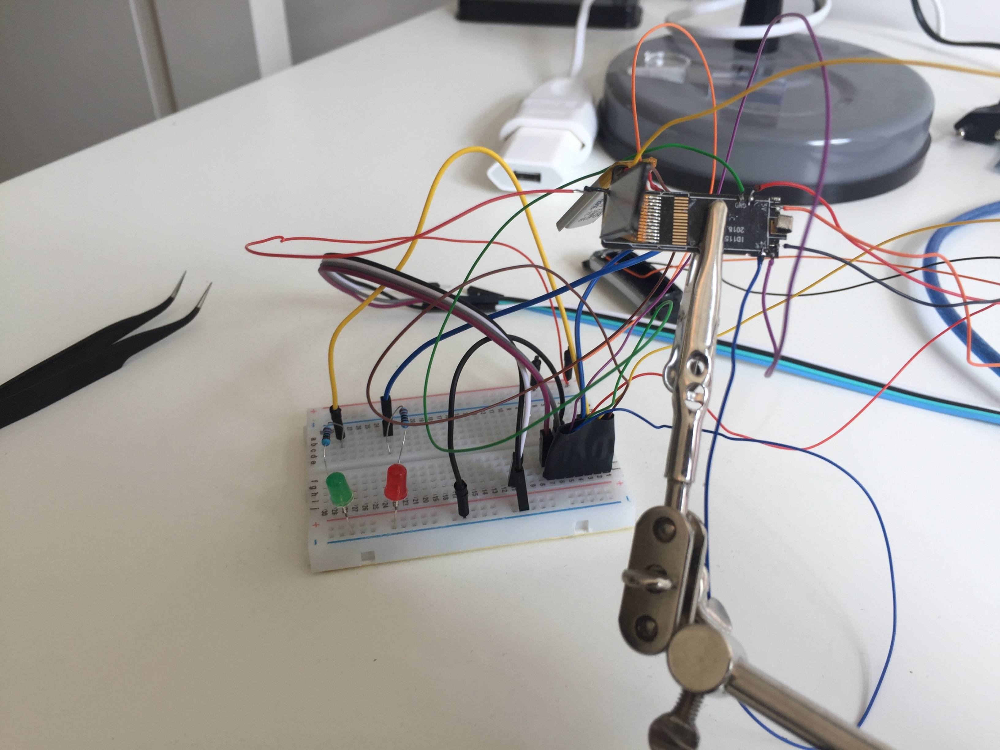
凌乱的连线
为了能够使用 J-Link 仿真器,需要从 segger 网站上下载驱动和命令行程序。如果你使用的是 MacOS,那么你就可以 homebrew 进行安装。caskroom/drivers/segger-jlink 提供了支持。安装好之后你就能使用命令行程序 JLinkExe 与 SWD 仿真器进行通信了。
随后，我下载并解压了 Nordic‘s nRF5 SDK(我使用的是version 12.3.0)。在 SDK 中挖掘示例，很明显我们需要一个知道如何输出 Arm 程序的编译器，于是我安装了gcc-arm-embeded(同样可用通过 homebrew 安装)。
在 Nordic 的开发者论坛上浏览 SDK 有关的帖子，发现通常使用的开发板是这个。SDK 预先配置了一些开发包的变量。要实现直接和 MCU 对话，我们需要修改 SDK 中的一些设置。
跑马灯
我花了很多时间去了解 nRF5 系统如何让程序跑起来的，最终搞懂了来龙去脉。在上面的的视频中可以看到两个闪烁的 LED。于是，我创建了一个 github 仓库 ，另外还写了 Makefiles。其中一个最大的技巧是找到 nRF51822 的一些变量,例如我的 RAM 只有 16KB。考虑到这些因素，我们需要对链接器脚本做些调整。
数字 IO
正如我所提到的，让 LED 闪烁还包含着希望和猜测 MCU 的哪个引脚与P1 和 P2 相连，P1 和 P2 连接着 LEDs。最简单的方法是让数字 IO 引脚不断重复升高和降低输出。让我惊讶的是，两个 LED 都被点亮了。更让我吃惊的是振动马达也能开启和关闭。
手动进行查找，我确定了以下的映射关系。
| nRF51822 引脚 | 板子 | 描述 |
|---|---|---|
| P0.30 | P1 | 通用数字 IO |
| P0.00 | P2 | 通用数字 IO |
| P0.01 | - | 振动马达 |
printf
在调试时，与计算机进行对话的能力是非常宝贵的。J-Link 仿真器支持 Real-Time Transfer (RTT)。RTT 芯片与计算机之间发送和接收数据。通过包含头文件#include "SEGGER_RTT.h",并调用函数 SEGGER_RTT_WriteString() 来使用它。在电脑上读取它需要用到 J-Link 包中的命令行程序 jlinkrttlogger。
OLED
另一个极具挑战性的任务是点亮 OLED 显示屏。市场上常见的 OLED 显示屏使用 ssd1306 驱动/控制器,与 MCU 之前串行通信,如 SPI、I2C。
我发现在一般的商店很难购买到 96x32 像素的显示屏，看起来这种分辨率并不是常规型号。上谷歌搜索了屏幕上的 “QT1316P01A”,最佳匹配的是一个中国网站。我在全球速卖通找到了最为接近的，但是除了有引脚名称外没有任何其他文档。
| 引脚 | 标志 |
|---|---|
| 1 | C2P |
| 2 | C2N |
| 3 | C1P |
| 4 | C1N |
| 5 | VBAT |
| 6 | NC |
| 7 | VSS |
| 8 | VDD |
| 9 | RES# |
| 10 | SCL |
| 11 | SDA |
| 12 | IREF |
| 13 | VCOMH |
| 14 | VCC |
来自阿里全球速递通的 OLED 脚针定义
如果上面的表格标注的准确的话，从 SCL、SDA、RES# 引脚可以看出它支持 I2C总线。如果我们可以找到 nRF51822 引脚与 OLED 引脚之间的三根合理的连线，那这将是一个好的开端。再来用显微镜看看。
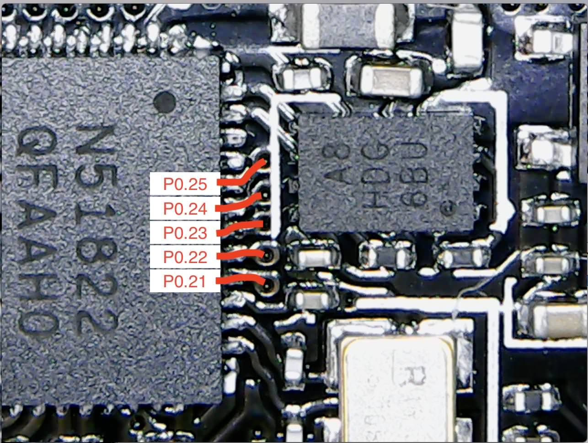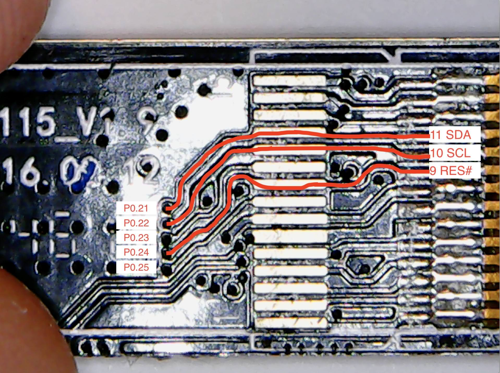
追踪 OLED 数据引脚
初步建立的一个新的对应表。
| nRF51822 引脚 | 板子 | 描述 |
|---|---|---|
| P0.21 | - | OLED SDA 引脚 |
| P0.22 | - | OLED SCL 引脚 |
| P0.24 | - | OLED RES# 引脚 |
I2C 协议涉及到的东西实质上远比 UART 这样简单的协议更多。其中最大的一个优点是在同一条总线支持多个主设备和从设备。这又增加了一点复杂性。往小了说是，我们需要知道 MCU 该和那个从设备通信；往大了说是，除了物理引脚，还要知道用于 OLED 显示屏的物理引脚的 ”逻辑“ 地址。
幸运的是，nRF5 SDK 中有个 I2C 扫描器的示例。简而言之，它尝试和每个可能的逻辑地址通信，当另一端有响应时返回报告。我修改过的一个版本在这里,运行并查看输出：
1 | $ make |
真是一个好消息，我们有理由相信显示屏被真确识别了，它也的确使用 I2C 总线。上谷歌搜索发现，0x3c 是这类设备的通用地址。
现在，我们可以尝试发送一些像素到显示屏上。在这个级别没有抽象的库可用。在 ssd1306 的文档中,我们找到了一些低层级的方法来发送数据到显示屏。该过程由一些列配置命令组成。其中包括设置屏幕方向、写入模式、大小。之后，把在屏幕上显示的数据字节序列发送到显示器的图形显示数据 RAM(GDDRAM)中。
为了得到正确的配置，我看了一下Adafruit’s ssd1306 library,并尝试枚举出相似的命令。我在这个项目中花在这里的时间最多。把所有细节都搞清除是非常耗时的。直到现在仍然还有些行为我无法解析，然而显示器已经可以正常显示数据了。
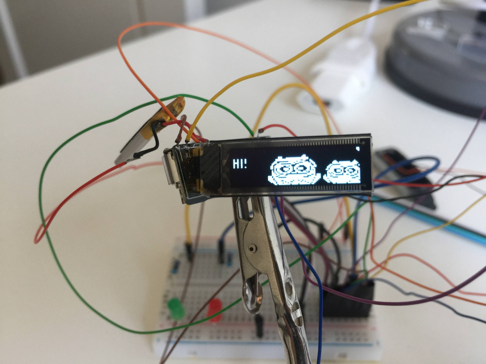
绘制了一个硬编码的位图
这是示例程序。
通过这些设置，显示屏被划分为包含 96 行的 4 行（页）。所以每一页的高度为 8 像素。发送的第一个字节的数据会被垂直的放在第一列上；第二个字节的数据会占据第二行的未知；第三行类似，直到第 96 行。当第一页写完，会到第二页继续类似的过程。
或者说，这是预期的结果。下面视频中观察的结果却不相同: 首先是一些奇数列被填充，然后是偶数列，最后才是类似的循环过程。
调试慢放版的位图显示
我花了很长的时间去弄明白为什么我在屏幕上看得到无意义的内容，然后又花了些时间调整配置来修复它。最后我放下了自尊，把这个奇怪的渲染逻辑在程序中实现，今天就到此为止吧！
Arduino 之旅
在我挖掘 Adafruit’s ssd1306 库时，我希望有一种方法可以在 nRF51822 中 “模拟” Arduino特定的比特。事实上已经有经验丰富的大神做了相似的项目，此项目还不止于此，他使用 nRF5 SDK 实现了 Arduino 核心库。
使用这个项目，我们可以打开 Arduino IDE 选择 nRF5 板，我们可以使用 Arduino 现有的生态开发程序。我 fork 了这个项目,并添加了对我们的这个手环板子的支持。可以在下拉菜单中选择使用 Tools > Board > ID115 Fitness Bracelet(nRF51822)。
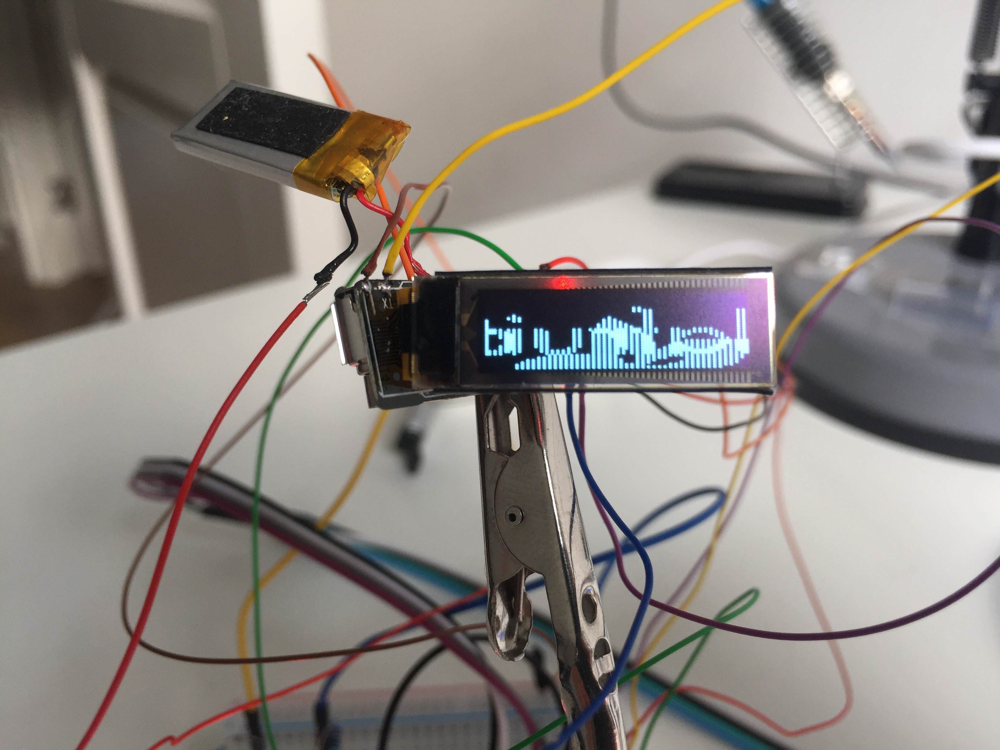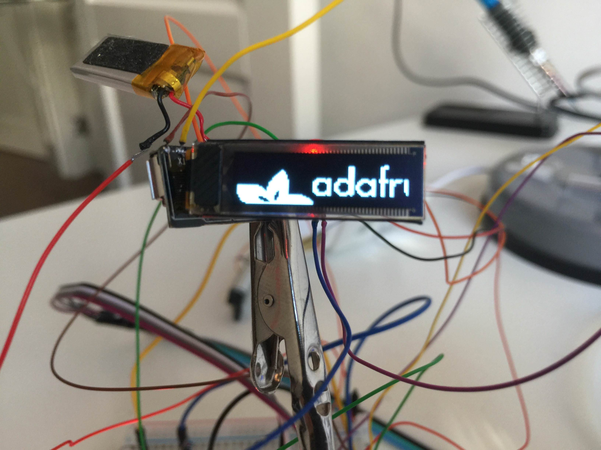
通过Arduino IDE 上传的没有任何补丁的 Adafruit ssd1306 库
这也意味着我们可以使用 Adafruit 的 OLED 库。让我惊讶和欣慰的是，OLED 也出现了 “先奇数，后偶素” 的渲染顺序。我很高兴 forked 这个库。现在我们得到了各种抽象的方法，而不是之前使用的低级方法，例如绘制文本。
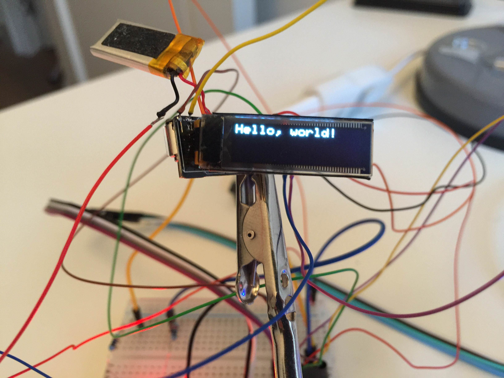
传统的 “Hello,World!”
模拟 IO
除了数字 IO,”开、关”。nRF51822 有 10 个用于读取模拟输入的引脚。这是很有用的，例如读取当前的电量。从文档中得知，当输入为 0V，我们会读取到 0;当输入为 VCC 时，我们会读取到 1023;当输入电压介于在它之间时也对应着相应的数值。
我定期的输出模拟信号的值，并绘制出了完整的信号结果。
 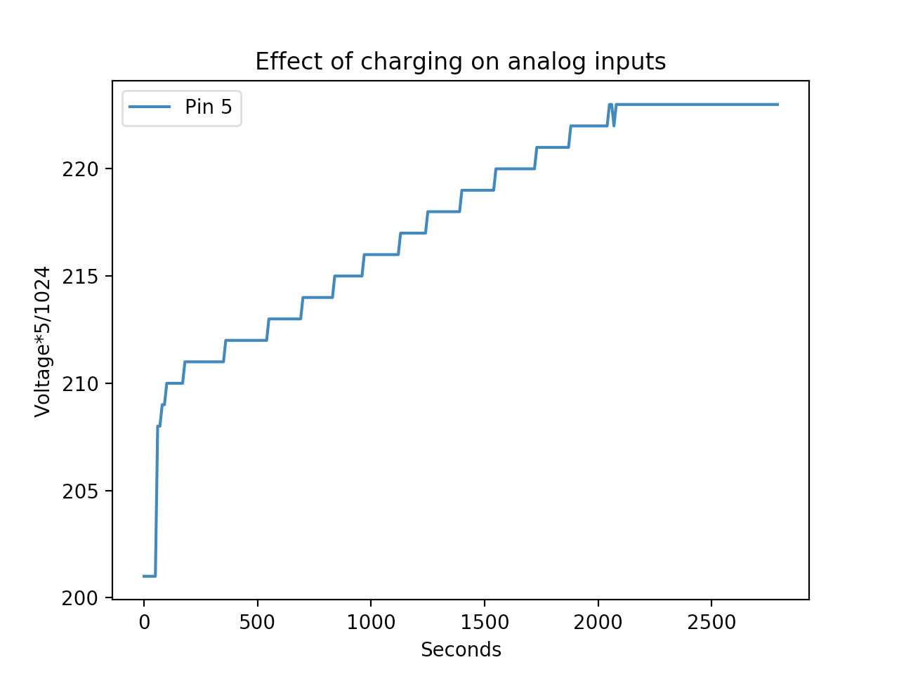
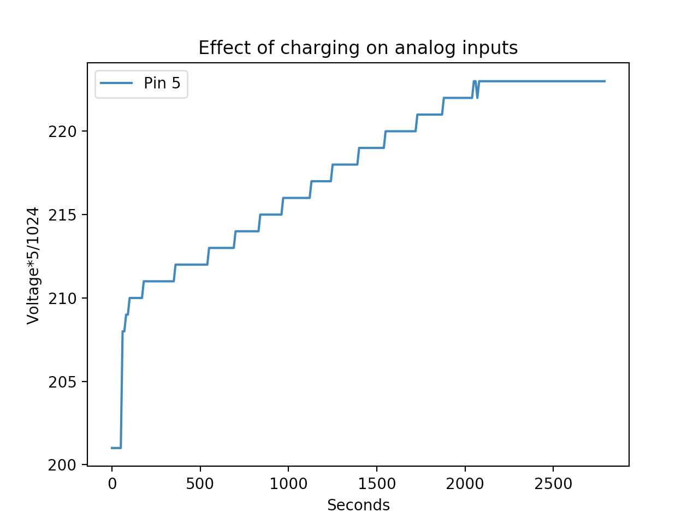震动板和充电对模拟输入的影响
我认为 P0.05 引脚和充电状态有关。在充电是他的数值会升高，不充电的时候会下降。我怀疑 P0.26 引脚连接着加速度传感器输出，当我摇动手环时它的数值会飙升。P0.03 和 P0.04 可能也连着着加速度传感器输出，但是这种行为可能对应着芯片输入的二阶效应。例如，注意在第一张图中当加速度传感器需要更多的能量时，电池电量（pin5）也会抖动。下面是一个二阶效应的例子。
代码可以在sketch上找到。原始数据和绘制脚本在这里。现在我们又可以在我们的映射表中添上几行了。
| nRF51822 引脚 | 板子 | 描述 |
|---|---|---|
| P0.05 | - | 模拟输入-与电池充电相关 |
| P0.26 | - | 模拟输入-加速度传感器 |
| P0.03 | - | 模拟输入-加速度传感器(可能) |
| P0.04 | - | 模拟输入-加速度传感器(可能) |
按钮
在最初的固件中，触控手环屏幕的指定位置可以点亮屏幕。如果我记得没错，按住它可以用来计时。这并不是一个实体点击按钮，而是某种运行效果不错的电容传感器。使用相同的方法找到数字输出，我找到了它与 MCU 连接方式。
按钮
代码可以在这里找到。
| nRF51822 引脚 | 板子 | 描述 |
|---|---|---|
| P0.10 | - | 数字输入-内置按钮 |
低功耗蓝牙(BLE)
nRF5 的蓝牙功是使用一个称为 SoftDevice 实现的。它是包含在 BLE 的堆栈中的预编译二进制文件。它应该独立于应用程序运行。SoftDevice 有相当多的版本，找到正确的版本依赖于 SDK 的版本和芯片的版本。
文档(不幸的是没有直达链接)兼容表中可以查询到指定芯片版本对应那个 SDK 版本和 SoftDevice 版本。对于我而言，芯片上标有 “QFAAHO” ，它有 256 KB 闪存，16KB RAW,与 SoftDevice s130 兼容。
我使用的 12.3 版本的 SDK 里面有一些使用 Software s130 的示例程序。与我们到目前为止刷入的程序相比，这些程序直接被刷入到地址 0x0。现在我们需要将 SoftDevice 刷入到地址 0x0, 实际的地址是 0x1b000。启动并初始化后，为了说明这一点，我做了一个类似 binky 的例子。但这里从 SoftDevice 开始,观察到的行为是一致的，除了我们需要确保 SoftDevice 在之前就被刷写过。
1 | $ make |
可以说，在蓝牙应用中最简单的 “Hello World” 程序是把设备变为信标。信标只广播自己，监听者的责任是探测到在其范围中信标并做出反应。这个 SDK 在相同的 ble_app_beacon 下提供了这样一个示例。它会假定 SoftDevice s130 在之前已近烧写了。
在这里，我们直接与芯片通信，而不是通过 SDK，这让事情变得更加困难。此外，还不得不调整 RAM 的大小（正如我从 blinky 示例中学到的那样），另外一个难以追踪的问题。事实证明，BLE 堆栈使用一个晶振来执行时间敏感的任务。SDK 示例假定有一个外部晶振。曾经我使用了上千个 printf 来搞清楚这些，需要将配置标志更改为使用合成时钟生成器来解决这个问题。信标源码在这里可以找到。
BLE + Arduino
一旦使用 nRF5 SDK 的 BLE 示例程序运行正常，并且了解了 RAM 和晶振陷阱。 我一次又一次的看了 Arduino 的运行环境。sandeepmistry/arduino-BLEPeripheral是做 Aruino-nRF5 项目的那个人的另一个很棒的项目。它提供了在设置 BLE 外围设备的内部细节的一个不错的抽象。
使用 BLE 点亮蓝色的 LED(使用这个 APP)
让我惊讶不已的是，我并没有 fork 这个库。Arduino-nRF5 项目的作者花了些时间让所有的板子都是可配置的，于是需要在下拉菜单 Tools > Low Frenquency Clock > Synthesized 中选择合适的 SoftDevice 和晶振源。真是了不起，你可以在上面的视频中看到，我写了一个开关 LED 的 快速上手的例子。
下一步
此时，在数周的时间里，我盯着这块板看了好几个小时之后，我非常期待能把它重新放回抽屉的后面，并把它放在那里一段时间。
原文: Hacking a cheap fitness tracker bracelet
来自安全客